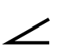

Назначение приложения
Приложение предназначено для создания и публикации технологических процессов механической обработки в соответствии с ЕСТД. На данном этапе реализовано создание техпроцесса в виде дерева операций, переходов и инструмента. Возможно добавление изображений с чертежами и эскизами в форматах Jpeg, bmp, png, gif с ограничением размера файла в 2 Мб. Созданный техпроцесс можно сохранить на локальный диск и загрузить с локального диска. Техпроцесс в файле хранится в виде структурированных массивов объектов в Json формате, изображения закодированы в base64. Хранение техпроцессов в базе данных является следующим этапом развития приложения, в данный момент не поддерживается. Созданный техпроцесс можно сформировать в виде pdf документа, включающего титульный лист, маршрутные карты, операционные карты, карты эскизов, карты контроля и ведомость оснастки. При создании техпроцесса есть возможность выбора информации из баз данных. Работает выбор материала, названия и кода операции, названия и кода профессии, режущего инструмента и оснастки.
Ограничения
Сайт не работает в браузере Internet Explorer. Приложение тестировалось на работоспособность в Google Chrome, Mozilla Firefox, Microsoft Edge, Opera.
Часто задаваемые вопросы
Не формируется комплект документации в формате pdf.
Данному сайту для работы требуется дать разрешение на всплывающие окна.
Отключите плагины браузера Adobe Pdf.
Не работает приложение.
Очистите кэш браузера. (В хроме Ctrl + Shift + Delete). Перезагрузите страницу.
Структура главного окна приложения
Главное окно состоит из двух частей.
В левой части окна находится дерево технологического процесса, над которым расположена панель с кнопками его создания и редактирования.
В правой части окна расположены динамические вкладки, меняющиеся при выборе соответствующей ветки в дереве технологического процесса. Это группы вкладок техпроцесса, операций, переходов и инструмента.
Верхняя панель кнопок
"Домой". При нажатии на эту кнопку дерево техпроцесса сворачивается. Отображаются только ветви операций. В правой части окна отображается группа вкладок техпроцесса. При удержании кнопки после нажатия дерево техпроцесса полностью раскрывается.
 A "Операция". При нажатии на эту кнопку в дерево техпроцесса добавляется новая операция. В правой части окна отображается группа вкладок операций.
A "Операция". При нажатии на эту кнопку в дерево техпроцесса добавляется новая операция. В правой части окна отображается группа вкладок операций.
 O "Переход". При нажатии на эту кнопку в дерево техпроцесса добавляется новый переход. В правой части окна отображается группа вкладок переходов.
O "Переход". При нажатии на эту кнопку в дерево техпроцесса добавляется новый переход. В правой части окна отображается группа вкладок переходов.
 T "Инструмент". При нажатии на эту кнопку в дерево техпроцесса добавляется новый инструмент. В правой части окна отображается группа вкладок инструментов.
T "Инструмент". При нажатии на эту кнопку в дерево техпроцесса добавляется новый инструмент. В правой части окна отображается группа вкладок инструментов.
 "Ренумеровать". При нажатии на эту кнопку операции и переходы в дереве техпроцесса ренумеруюся. Начальный номер операций, а также шаг нумерации задаются в группе вкладок техпроцесса во вкладке "Настройки". По умолчанию номер первой операции 010, шаг номеров операций 010.
"Ренумеровать". При нажатии на эту кнопку операции и переходы в дереве техпроцесса ренумеруюся. Начальный номер операций, а также шаг нумерации задаются в группе вкладок техпроцесса во вкладке "Настройки". По умолчанию номер первой операции 010, шаг номеров операций 010.
 "Удалить". При нажатии на эту кнопку удаляется выбранная ветвь в дереве техпроцесса со всеми дочерними элементами.
"Удалить". При нажатии на эту кнопку удаляется выбранная ветвь в дереве техпроцесса со всеми дочерними элементами.
"Копировать". При нажатии на эту кнопку копируется выбранная ветвь в дереве техпроцесса со всеми дочерними элементами.
 "Вырезать". При нажатии на эту кнопку отмечается выбранная ветвь в дереве техпроцесса со всеми дочерними элементами для дальнейшего перемещения по дереву.
"Вырезать". При нажатии на эту кнопку отмечается выбранная ветвь в дереве техпроцесса со всеми дочерними элементами для дальнейшего перемещения по дереву.
 "Вставить". При нажатии на эту кнопку вставляется ранее выбранная ветвь в дереве техпроцесса со всеми дочерними элементами для копирования либо перемещения.
"Вставить". При нажатии на эту кнопку вставляется ранее выбранная ветвь в дереве техпроцесса со всеми дочерними элементами для копирования либо перемещения.
"Помощь". При нажатии на эту кнопку открывается всплывающее окно с описанием интерфейса приложения.
 "Новый". При нажатии на эту кнопку очищается дерево техпроцесса для создания нового технологического процесса.
"Новый". При нажатии на эту кнопку очищается дерево техпроцесса для создания нового технологического процесса.
"Сохранить". При нажатии на эту кнопку сохраняется технологический процесс в виде текстового файла в папку "Загрузки" с расширением .json
Выберите файл "Выберите файл". При нажатии на эту кнопку вызывается диалоговое окно выбора ранее сохраненного файла с расширением .json
Дерево техпроцесса
ТП - рабочий техпроцесс. 1 уровень дерева.
└ - операция. 2 уровень дерева.
└ - переход. 3 уровень дерева.
└ - режущий инструмент и оснастка. 4 уровень дерева.
Узлы дерева можно перемещать и копировать с помощью технологии drag&drop. Если двигать выделенный узел с зажатой левой кнопкой мыши, будет происходить перемещение узла по дереву. Если при этом нажать клавишу "Ctrl", будет происходить копирование узла.
Узлы можно копировать из техпроцесса, открытого в другом окне браузера. Для этого щелкните правой кнопкой мыши на выделенном узле и выберите пункт меню Сохранить в буфер. Затем в другом техпроцессе выберите узел, после которого будет вставлен скопированный и нажмите на пункт контекстного меню Загрузить из буфера.Фрагмент остается в буфере даже после выхода из браузера.
Спецсимволы
При оформлении технологической документации в картах МК, ОК, КК можно выводить следующие специальные символы: кружок вокруг числа, знак шероховатости, допуски формы и расположения и числовые значения допуска в верхнем и нижнем регистре. Для этого в тексте перехода выделите элемент двойными круглыми скобками, например:
((10)) → ⑩;
((Ra3,2)) → ;
((ДП|ø0,05[M]|A)) → ;
50((+0,039/0)) → 50+0.039.
| Код | Рисунок | Описание |
|---|---|---|
| ПР | ПРямолинейность | |
| ПЛ | ПЛоскостность | |
| КР | КРуглость | |
| ЦИ | ЦИлиндричность | |
| ПС | профиль Продольного Сечения | |
| ПА | ПАраллельность | |
| ПЕ | ПЕрпендикулярность | |
| НА |  | НАклон |
| СО | СОосность | |
| СИ | СИмметричность | |
| ДП | Допуск Позиционный | |
| ПО | Пересечение Осей | |
| БИ | БИение | |
| БП | Биение Полное | |
| ФП | Форма Профиля | |
| ФО | ФОрма поверхности | |
| ПАПЛ | ПАраллельность и ПЛоскостность | |
| ПЕПЛ | ПЕрпендикулярность и ПЛоскостность | |
| НАПЛ | НАклон и ПЛоскостность | |
| [P] | Выступающее поле допуска | |
| [M] | Зависимый допуск |
Пример техпроцесса
Загрузите архив с примером файла техпроцесса. Разархивируйте его в любую папку. В web-приложении нажмите кнопку Выберите файл. Загрузится дерево техпроцесса. Для формирования комплекта технологической документации перейдите в корень дерева ТП, выберите вкладку "Комплект ТД" и нажмите кнопку Сформировать комплект документации.
Что нового в версии?
Версия V1.3b
Устранение ошибок при копировании переходов, связанных с неправильной нумерацией.
Исправлена ошибка, при которой в процессе изменения номера операции ссылка на номер операции в переходах не обновлялась.
Теперь при нажатии кнопки  "Ренумеровать", кроме операций перенумеруются и переходы.
"Ренумеровать", кроме операций перенумеруются и переходы.
Переделаны шрифты pdf. Теперь в них есть прописные греческие буквы и спецсимволы.
Улучшено оформление документации за счет введения графических элементов в pdf файл: ⑩,, , 50+0.039.
Добавлена темная тема во вкладке "Настройки". Для этого нужно снять галочку с кнопки "Светлая тема".
Убрано ограничение на длину 255 символов строки переходов. Теперь максимальная длина строки 65535 байт.
Улучшена работа с эскизами. В ветку операции добавлен значок эскиза при его наличии. При написании перехода можно вызвать просмотр эскиза в том же окне по кнопке. Эскиз можно перемещать в пределах окна.
Исправлены мелкие ошибки.